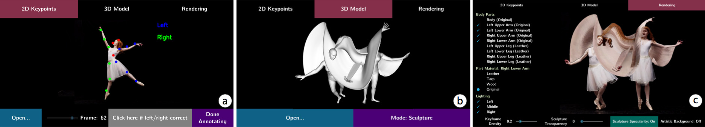

MoSculp:
Interactive Visualization of Shape and Time
Figure 1. Our MoSculp system transforms a video (a) into a motion sculpture, i.e., the 3D path traced by the human while moving through space. Our motion sculptures can be virtually inserted back into the original video (b), rendered in a synthetic scene (c), and physically 3D printed (d). Users can interactively customize their design, e.g., by changing the sculpture material and lighting.
We present a system that visualizes complex human motion via 3D motion sculptures—a representation that conveys the 3D structure swept by a human body as it moves through space. Our system computes a motion sculpture from an input video, and then embeds it back into the scene in a 3D-aware fashion. The user may also explore the sculpture directly in 3D or physically print it. Our interactive interface allows users to customize the sculpture design, for example, by selecting materials and lighting conditions.
To provide this end-to-end workflow, we introduce an algorithm that estimates a human’s 3D geometry over time from a set of 2D images, and develop a 3D-aware image-based rendering approach that inserts the sculpture back into the original video. By automating the process, our system takes motion sculpture creation out of the realm of professional artists, and makes it applicable to a wide range of existing video material.
By conveying 3D information to users, motion sculptures reveal space-time motion information that is difficult to perceive with the naked eye, and allow viewers to interpret how different parts of the object interact over time. We validate the effectiveness of motion sculptures with user studies, finding that our visualizations are more informative about motion than existing stroboscopic and space-time visualization methods.
Introduction
Complicated actions, such as swinging a tennis racket or dancing ballet, can be difficult to convey to a viewer through a static photo. To address this problem, researchers and artists have developed a number of motion visualization techniques, such as chronophotography, stroboscopic photography, and multi-exposure photography [37, 8]. However, since such methods operate entirely in 2D, they are unable to convey the motion’s underlying 3D structure. Consequently, they tend to generate cluttered results when parts of the object are occluded (Figure 2). Moreover, they often require special capturing procedures, environment (such as a clean, black background), or lighting equipment.
In this paper, we present MoSculp, an end-to-end system that takes a video as input and produces a motion sculpture: a visualization of the spatiotemporal structure carved by a body as it moves through space. Motion sculptures aid in visualizing the trajectory of the human body, and reveal how its 3D shape evolves over time. Once computed, motion sculptures can be inserted back to the source video (Figure 1b), rendered in a synthesized scene (Figure 1c), or physically 3D printed (Figure 1d).
Figure 2. Comparison of (a) our motion sculptures with (b) stroboscopic photography and (c) shape-time photography [17] on the Ballet-1 [10] and Federer clips.
We develop an interactive interface that allows users to: (i) explore motion sculptures in 3D, i.e., navigate around them and view them from alternative viewpoints, thus revealing information about the motion that is inaccessible from the original viewpoint, and (ii) customize various rendering settings, including lighting, sculpture material, body parts to render, scene background, and etc.1. These tools provide flexibility for users to express their artistic designs, and further facilitate their understanding of human shape and motion.
Our main contribution is devising the first end-to-end system for creating motion sculptures from videos, thus making them accessible for novice users. A core component of our system is a method for estimating the human’s pose and body shape over time. Our 3D estimation algorithm, built upon state of the art, has been designed to recover the 3D information required for constructing motion sculptures (e.g., by modeling clothing), and to support simple user corrections. The motion sculpture is then inferred from the union of the 3D shape estimations over time. To insert the sculpture back into the original video, we develop a 3D-aware, image-based rendering approach that preserves depth ordering. Our system achieves high-quality, artifact-free composites for a variety of human actions, such as ballet dancing, fencing, and other athletic actions.
System Walkthrough
To generate a motion sculpture, the user starts by loading a video into the system, after which MoSculp detects the 2D keypoints and overlays them on the input frames (Figure 3a). The user then browses the detection results and confirms, on a few (∼3-4) randomly selected frames, that the keypoints are correct by clicking the “Left/Right Correct” button. After labeling, the user hits “Done Annotating,” which triggers MoSculp to correct temporally inconsistent detections, with these labeled frames serving as anchors. MoSculp then generates the motion sculpture in an offline process that includes estimating the human’s shape and pose in all the frames and rendering the sculpture.
After processing, the generated sculpture is loaded into MoSculp, and the user can virtually explore it in 3D (Figure 3b). This often reveals information about shape and motion that is not available from the original camera viewpoint, and facilities the understanding of how different body parts interact over time.
Finally, the rendered motion sculpture is displayed in a new window (Figure 3c), where the user can customize the design by controlling the following rendering settings.

Figure 3. MoSculp user interface. (a) The user can browse through the video and click on a few frames, in which the keypoints are all correct; these labeled frames are used to fix keypoint detection errors by temporal propagation. After generating the motion sculpture, the user can (b) navigate around it in 3D, and (c) customize the rendering by selecting which body parts form the sculpture, their materials, lighting settings, keyframe density, sculpture transparency, specularity, and the scene background.
- Scene. The user chooses to render the sculpture in a synthesized scene or embed it back into the original video by toggling the “Artistic Background” button in Figure 3c. For synthetic scenes (i.e., “Artistic Background” on), we use a glossy floor and a simple wall lightly textured for realism. To help the viewer better perceive shape, we render shadows cast by the person and sculpture on the wall as well as their reflections on the floor (as can be seen in Figure 1c).
- Lighting. Our set of lights includes two area lights on the left and right sides of the scene as well as a point light on the top. The user may choose any combination of these lights (see the “Lighting” menu in Figure 3c).
- Body Parts. The user decides which parts of the body form the motion sculpture. For instance, one may choose to render only the arms to perceive clearly the arm movement, as in Figure 2a. The body parts that we consider are listed under the “Body Parts” menu in Figure 3c.
- Materials. Users can control the texture of the sculpture by choosing one of the four different materials: leather, tarp, wood, and original texture (i.e., colors taken from the source video by simple ray casting). To better differentiate sculptures formed by different body parts, one can specify a different material for each body part (see the dynamically updating “Part Material” menu in Figure 3c).
- Transparency. A slider controls transparency of the motion sculpture, allowing the viewer to see through the sculpture and better comprehend the complex space-time occlusion.
- Human Figures. In addition to the motion sculpture, MoSculp can also include a number of human images (similar to sparse stroboscopic photos), which allows the viewer to associate sculptures with the corresponding body parts that generated them. A density slider controls how many of these human images, sampled uniformly, get inserted.
These tools grant users the ability to customize their visualization and select the rendering settings that best convey the space-time information captured by the motion sculpture at hand.
Example Motion Sculptures
We tested our system on a wide range of videos of complex actions including ballet, tennis, running, and fencing. We collected most of the videos from the Web (YouTube, Vimeo, and Adobe Stock), and captured two videos ourselves using a Canon 6D (Jumping and U-Walking).
For each example, we embed the motion sculpture back into the source video and into a synthetic background. We also render the sculpture from novel viewpoints, which often reveals information imperceptible from the captured viewpoint. In Jumping (Figure 4), for example, the novel-view rendering (Figure 4b) shows the slide-like structure carved out by the arms during the jump.
Figure 4. The Jumping sculpture (material: marble; rendered body parts: all). (a) First and final video frames. (b) Novel-view rendering. (c, d) The motion sculpture is inserted back into the original scene and to a synthetic scene, respectively.
An even more complex action, cartwheel, is presented in Figure 5. For this example, we make use of the “Body Parts” options in our user interface, and decide to visualize only the legs to avoid clutter. Viewing the sculpture from a top view (Figure 5b) reveals that the girl’s legs cross and switch their depth ordering—a complex interaction that is hard to comprehend even by repeatedly playing the original video.
Figure 5. The Cartwheel sculpture (material: wood; rendered body parts: legs). (a) Sampled video frames. (b) Novel-view rendering. (c, d) The motion sculpture is inserted back into the source video and to a synthetic scene, respectively.
In U-Walking (Figure 6), the motion sculpture depicts the person’s motion in depth; this can be perceived also from the original viewpoint (Figure 6a), thanks to the shading and lighting effects that we select from the different rendering options.
Figure 6. (a) The U-Walking sculpture with texture taken from the source video. (b) The same sculpture rendered from a novel top view in 3D, which reveals the motion in depth.
In Tennis (Figure 2 bottom), the sculpture highlights bending of the arm during the serve, which is not easily visible from 2D or 2.5D visualizations (also shown in Figure 2 bottom). Similarly, in Ballet-2 [10] (Figure 7), a sinusoidal 3D surface emerges from the motion of the ballerina’s right arm, again absent in the 2D or 2.5D visualizations.
Figure 7. The Ballet-2 sculpture (material: leather; rendered body parts: body and arms). (a) First and final frames. (b) The motion sculpture rendered in a synthetic scene.
Algorithm for Generating Motion Sculptures
The algorithm behind MoSculp consists of several steps illustrated in Figure 8. In short, our algorithm (a) first detects the human body and its 2D pose (represented by a set of keypoints) in each frame, (b) recovers a 3D body model that represents the person’s overall shape and its 3D poses across the frames, in a temporally coherent manner, (c) extracts a 3D skeleton from the 3D model and sweeps it through the 3D space to create an initial motion sculpture, and finally, (d-f) renders the sculpture in different styles, together with the human, while preserving the depth ordering.
Figure 8. MoSculp workflow. Given an input video, we first detect 2D keypoints for each video frame (a), and then estimate a 3D body model that represents the person’s overall shape and its 3D poses throughout the video, in a temporally coherent manner (b). The motion sculpture is formed by extracting 3D skeletons from the estimated, posed shapes and connecting them (c). Finally, by jointly considering depth of the sculpture (c) and the human bodies (d), we render the sculpture in different styles, either into the original video (e) or synthetic scene (f).
2D Keypoint Detection
The 2D body pose in each frame, represented by a set of 2D keypoints, is estimated using OpenPose [11]. Each keypoint is associated with a joint label (e.g., left wrist, right elbow) and its 2D position in the frame.
While keypoints detected in a single image are typically accurate, inherent ambiguity in the motion of a human body sometimes leads to temporal inconsistency, e.g., the left and right shoulders flipping between adjacent frames. We address this problem by imposing temporal coherency between detections in adjacent frames. Specifically, we use a Hidden Markov Model (HMM), where the per-frame detection results are the observations. We compute the maximum marginal likelihood estimate of each joint’s location at a specific timestamp, while imposing temporal smoothness (see the supplementary material for more details).
We develop a simple interface (Figure 3a), where the user can browse through the detection results (overlaid on the video frames) and indicate whether the detected joints are all correct in a given frame. The frames labeled correct are then used as constraints in another HMM inference procedure. Three or four labels are usually sufficient to correct all the errors in a video of 100 frames.
From 2D Keypoints to 3D Body Over Time
Given the detected 2D keypoints, our goal now is to fit a 3D model of the body in each frame. We want temporally consistent configurations of the 3D body model that best match its 2D poses (given by keypoints). That is, we opt to minimize the re-projection error, i.e., the distance between each 2D keypoint and the 3D-to-2D projection of the mesh vertices that correspond to the same body part.
We use the SMPL [33] body model that consists of a canonical mesh and a set of parameters that control the body shape, pose, and position. Specifically, the moving body is represented by shape parameters β , per-frame pose θ t , and global translation T t . We estimate these parameters for each of the N frames by minimizing the following objective function:
The data term Ldata encourages the projected 3D keypoints in each frame to be close to the detected 2D keypoints. Lprior is a per-frame prior defined in [6], which imposes priors on the human pose as well as joint bending, and additionally penalizes mesh interpenetration. Finally, Ltemporal encourages the reconstruction to be smooth by penalizing change in the human’s global translations and local vertex locations. αi are hand-chosen constant weights that maintain the relative balance between the terms. This formulation can be seen as an extension of SMPLify [6], a single-image 3D human pose and shape estimation algorithm, to videos. The optimization is solved using [34]. See the supplementary material for the exact term definitions and implementation details.
Generating the Sculpture
With a collection of 3D body shapes (Figure 9a), we create a space-time sweep by extracting the reconstructed person’s skeleton from the 3D model in each frame (marked red on the shapes in Figure 9b) and connecting these skeletons across all frames (Figure 9c). This space-time sweep forms our initial motion sculpture.
Figure 9. Sculpture formation. (a) A collection of shapes estimated from the Olympic sequence (see Figure 1). (b) Extracted 3D surface skeletons (marked in red). (c) An initial motion sculpture is generated by connecting the surface skeletons across all frames.
Refining and Rendering Motion Sculptures
In order to achieve artifact-free and vivid renderings, we still have several remaining issues to resolve. First, a generic 3D body model (such as the one that we use) cannot accurately capture an individual’s actual body shape In other words, it lacks important structural details, such as fine facial structure, hair, and clothes. Second, our reconstruction only estimates the geometry, but not the texture. Texture mapping from 2D to 3D under occlusion itself is a challenging task, even more so when the 3D model does not cover certain parts of the body. Figure 11a illustrates these challenges: full 3D rendering lacks structural details and results in noticeable artifacts.
Our approach is inserting the 3D motion sculpture back into the original 2D video, rather than mapping the 2D contents from the video to the 3D scene. This allows us to preserve the richness of information readily available in the input video (Figure 11c) without modeling fine-scale (and possibly idiosyncratic) aspects of the 3D shape.
Figure 11. (a) Full 3D rendering using textured 3D human meshes exposes artifacts and loses important appearance information, e.g., the ballerina’s hair and dress. (b) Simply placing the sculpture on top of the frame discards the information about depth ordering. (c) Our 3D-aware image-based rendering approach preserves the original texture as well as appearance, and reveals accurate 3D occlusion relationship.
Depth-Aware Composite of 3D Sculpture and 2D Video
As can be seen in Figure 11b, naively superimposing the rendered 3D sculpture onto the video results in a cluttered visualization that completely disregards the 3D spatial relationships between the sculpture and the object. Here, the person’s head is completely covered by the sculpture, making shape and motion very hard to interpret. We address this issue and produce depth-preserving composites such as the one in Figure 11c.
To accomplish this, we estimate a depth map of the person in each video frame. For each frame and each pixel, we then determine if the person is closer to or farther away from the camera than the sculpture by comparing the sculpture’s and person’s depth values at that pixel (the sculpture depth map is automatically given by its 3D model). We then render at each pixel what is closer to the camera, giving us the result shown in Figure 11c.
Refinement of Depth and Sculpture
While the estimated sculpture is automatically associated with a depth map, this depth map rarely aligns perfectly with the human silhouette. Furthermore, we still need to infer the human’s depth map in each frame for depth ordering. As can be seen in Figure 10c, the estimated 3D body model provides only a rough and partial estimation of the human’s depth due to misalignment and missing 3D contents (e.g., the skirt or hair). A rendering produced with these initial depth maps leads to visual artifacts, such as wrong depth ordering and gaps between the sculpture and the human (Figure 10a),
Figure 10. Flow-based refinement. (a) Motion sculpture rendering without refinement; gaps between the human and the sculpture are noticeable. (b) Such artifacts are eliminated with our flow-based refinement scheme. (c) We first compute a dense flow field between the frame silhouette (bottom left) and the projected 3D silhouette (bottom middle). We then use this flow field (bottom right) to warp the initial depth (top right; rendered from the 3D model) and the 3D sculpture to align them with the image contents.
To eliminate such artifacts, we extract foreground masks of the human across all frames (using Mask R-CNN [20] followed by k-NN matting [13]), and refine the human’s initial depth maps as well as the sculpture as follows.
For refining the object’s depth, we compute dense matching, i.e., optical flow [32], between the 2D foreground mask and the projected 3D silhouette. We then propagate the initial depth values (provided by the estimated 3D body model) to the foreground mask via warping with optical flow. If a pixel has no depth after warping, we copy the depth of its nearest neighbor pixel that has depth. This approach allows us to approximate a complete depth map of the human. As shown in Figure 10c, the refined depth map has values for the ballerina’s hair and skirt, allowing them to emerge from the sculpture (compared with the hair in Figure 10a).
For refining the sculpture, recall that a motion sculpture is formed by a collection of surface skeletons. We use the same flow field as above to warp the image coordinates of the surface skeleton in each frame. Now that we have determined the skeletons’ new 2D locations, we edit the motion sculpture in 3D accordingly2. After this step, boundary of the sculpture, when projected to 2D, aligns well with the 2D human mask.
User Studies
We conducted several user studies to compare how well motion and shape are perceived from different visualizations, and evaluate the stylistic settings provided by our interface.
Motion Sculpture vs. Stroboscopic vs. Shape-Time
We asked the participants to rate how well motion information is conveyed in motion sculptures, stroboscopic photography, and shape-time photography [17] for five clips. An example is shown in Figure 2, and the full set of images used in our user studies is included in the supplementary material.
In the first test, we presented the raters with two different visualizations (ours vs. a baseline), and asked “which visualization provides the clearest information about motion?”. We collected responses from 51 participants with no conflicting interests for each pair of comparison. 77% of the responses preferred our method to shape-time photography, and 67% preferred ours to stroboscopic photography.
In the second study, we compared how easily users can perceive particular information about shape and motion from different visualizations. To do so, we asked the following clip-dependent questions: “which visualization helps more in seeing:
- the arm moving in front the body (Ballet-1),
- the wavy and intersecting arm movement (Ballet-2),
- the wavy arm movement (Jogging and Olympics), or
- the person walking in a U-shape (U-Walking).”
We collected 36 responses for each sequence. As shown in Table 1, on average, the users preferred our visualization over the alternatives 75% of the time. The questions above are intended to focus on the salient 3D characteristics of motion in each clip, and the results support that our visualization conveys them better than the alternatives. For example, in Ballet-1 (Figure 2 top), our motion sculpture visualizes the out-of-plane sinusoidal curve swept out by the ballerina’s arm, whereas both shape-time and stroboscopic photography show only the in-plane motion. Furthermore, our motion sculpture shows the interactions between the left and right arms.
Table 1. Percentage. We conducted human studies to compare our visualization with stroboscopic and shape-time photography [17]. Majority of the subjects suggested that ours conveys more motion information.
Effects of Lighting and Floor Reflections
To avoid exposing too many options to the user, we conducted a user study to decide (i) whether floor reflections are needed in our synthetic-background rendering, and (ii) whether localized or global lighting should be used. The raters were asked which rendering is more visually appealing: with vs. without reflections (Ours vs. A), and using localized vs. ambient lighting (Ours vs. B).
Figure 12 shows the results collected from 20-35 responses for each sequence on Amazon Mechanical Turk, after filtering out workers who failed our consistency check. Most of the raters preferred our rendering with reflections plus shadows (82%) and localized lighting (84%) to the other options. We thus use these as the standard settings in our user interface.
Figure 12. We conducted human studies to justify our artistic design choices. Top: sample stimuli used in the studies – our rendering (middle) with two variants, without reflections (A) and without localized lighting (B). Bottom: percentage; most of the subjects agreed with our choices.
Technical Evaluation
We conducted experiments to evaluate our two key technical components: (i) 3D body estimation over time, and (ii) flow-based refinement of depth and sculpture.
Estimating Geometry Over Time
In our first evaluation, we compared our approach that estimates the correct poses by considering change across multiple frames against the pose estimation of SMPLify [6], in which the 3D body model is estimated in each frame independently. Figure 13a shows the output of SMPLify, and Figure 13b shows our results. The errors in the per-frame estimates and the lack of temporal consistency in Figure 13a resulted in a jittery, disjoint sculpture. In contrast, our approach solved for a single set of shape parameters and smoothly varying pose parameters for the entire sequence, and hence produced significantly better results.
To quantitatively demonstrate the effects of our approach on the estimated poses, we applied Principal Component Analysis (PCA) to the 72D pose vectors, and visualized the pose evolution in 2D in Figure 13. In SMPLify (Figure 13a), there is a significant discrepancy between poses in frames 25 and 26: the human body abruptly swings to the right side. In contrast, with our approach, we obtained a smooth evolution of poses (Figure 13b).
Figure 13. Per-frame vs. joint optimization. (a) Per-frame optimization produces drastically different poses between neighboring frames (e.g., from frame 25 [red] to frame 26 [purple]). The first two principal components explain only 69% of the pose variance. (b) On the contrary, our joint optimization produces temporally smooth poses across the frames. The same PCA analysis reveals that the pose change is gradual, lying on a 2D manifold with 93% of the variance explained.
Flow-Based Refinement
As discussed earlier, because the 3D shape and pose are encoded using low-dimensional basis vectors, perfect alignment between the projected shape and the 2D image is unattainable. These misalignments show up as visible gaps in the final renderings. However, our flow-based refinement scheme can significantly reduce such artifacts (Figure 10b).
To quantify the contribution of the refinement step, we computed Intersection-over-Union (IoU) between the 2D human silhouette and projected silhouette of the estimated 3D body. Table 2 shows the average IoU for all our sequences, before and after flow refinement. As expected, the refinement step significantly improves the 3D-2D alignment, increasing the average IoU from 0.61 to 0.94. After hole filling with the nearest neighbor, the average IoU further increases to 0.96.
Table 2. IoU between human silhouettes and binarized human depth maps before warping, after warping, and after additional hole filling with nearest neighbor (HF). Flow-based refinement leads to better alignment with the original images and hence improves the final renderings.
Implementation Details
We rendered our scenes using Cycles in Blender. It took a Stratasys J750 printer around 10 hours to 3D print the sculpture shown in Figure 1d (∼30cm long). To render realistic floor reflections in synthetic scenes, we coarsely textured the 3D human with simple ray casting: we cast a ray from each vertex on the human mesh to the estimated camera, and colored that vertex with the RGB value of the intersected pixel. Intuitively, this approach mirrors texture of the visible parts to obtain texture for the occluded parts. The original texture for sculptures (such as the sculpture texture in Figure 6) was computed similarly, except that when the ray intersection fell outside the (eroded) human mask, we took the color of the intersection’s nearest neighbor inside the mask to avoid colors being taken from the background. As an optional post-processing step, we smoothed the vertex colors over each vertex’s neighbors. Other sculpture texture maps (such as wood) were downloaded from poliigon.com.
To render a motion sculpture together with the human figures, we first rendered the 3D sculpture’s RGB and depth images as well as the human’s depth maps using the recovered camera. We then composited together all the RGB images by selecting, for each pixel, the value that is the closest to the camera, as mentioned before. Due to the noisy nature of the human’s depth maps, we used a simple Markov Random Field (MRF) with Potts potentials to enforce smoothness during this composition.
For comparisons with shape-time photography [17], because it requires RGB and depth image pairs as input, we fed our refined depth maps to the algorithm in addition to the original video. Furthermore, shape-time photography was not originally designed to work on high-frame-rate videos; directly applying it to such videos leads to a considerable number of artifacts. We therefore adapted the algorithm to normal videos by augmenting it with the texture smoothness prior in [42] and Potts smoothness terms.
Extensions
We extend our model to handle camera motion and generate non-human motion sculptures.
Handling Camera Motion
As an additional feature, we extend our algorithm to also handle camera motion. One approach for doing so is to stabilize the background in a pre-processing step, e.g., by registering each frame to the panoramic background [9], and then applying our system to the stabilized video. This works well when the background is mostly planar. Example results obtained with this approach are shown for the Olympic and Dunking videos, in Figure 1 and Figure 14a, respectively.
 Figure 14. Motion sculptures for videos captured by moving cameras.
Figure 14. Motion sculptures for videos captured by moving cameras.
However, for more complex scenes containing large variations in depth, this approach may result in artifacts due to motion parallax. Thus, for general cases, we use an off-the-shelf Structure-from-Motion (SfM) software [44] to estimate the camera position at each frame and then compensate for it. More specifically, we estimate the human’s position relative to the moving camera, and then offset that position by the camera position given by SfM. An example of this approach is Run, Forrest, Run!, shown in Figure 14b. As can be seen, our method works well on this challenging video, producing a motion sculpture spanning a long distance (Figure 14b has been truncated due to space limit, so the actual sculpture is even longer; see the supplementary video).
Non-Human Motion Sculptures
While we have focused on visualizing human motion, our system can also be applied to other objects, as long as they can be reliably represented by a parametric 3D model—an idea that we explore with two examples. Figure 15a shows the motion sculpture generated for a running horse, where we visualize its two back legs. To do so, we first estimate the horse’s poses across all frames with the per-frame method by Zuffi et al. [51], smooth the estimated poses and translation parameters, and finally apply our method.
Figure 15. Non-human motion sculptures. We sculpt (a) the leg motion of a horse gait, and (b) the interaction between a basketball and the person dribbling it.
In Figure 15b, we visualize how a basketball interacts in space and time with the person dribbling it. We track the ball in 2D (parameterized by its location and radius), and assign the hand’s depth to the ball whenever they are in contact (depth values between two contact points are linearly interpolated). With these depth maps, camera parameters, and ball silhouettes, we insert a 3D ball into the scene.
Discussion & Conclusion
We presented MoSculp, a system that automates the creation of motion sculptures, and allows users to interactively explore the visualization and customize various rendering settings. Our system makes motion sculpting accessible to novice users, and requires only a video as input.
As for limitations, our motion sculpture may look cluttered when the motion is repetitive and spans only a small region (Figure 16a). In addition, we rely on high-quality pose estimates, which are sometimes unattainable due to the inherent ambiguity of the 2D-to-3D inverse problem. Figure 16b shows such an example: when the person is captured in side profile throughout the video (Figure 16c), there are multiple plausible arm poses that satisfy the 2D projection equally well. The red-circled region in Figure 16b shows one plausible, but wrong arm pose. Nevertheless, when our algorithm renders the imperfect sculpture back into the video from its original viewpoint, these errors are no longer noticeable (Figure 16c).
Figure 16. Limitations. (a) Cluttered motion sculpture due to repeated and spatially localized motion. (b) Inaccurate pose: there are multiple arm poses that satisfy the same 2D projection equally well. (c) Nonetheless, these errors are not noticeable in the original camera view.
We demonstrated our motion sculpting system on diverse videos, revealing complex human motions in sports and dancing. We also demonstrated through user studies that our visualizations facilitate users’ understanding of 3D motion. We see two directions opened by this work. The first is in developing artistic tools that allow users to more extensively customize the aesthetics of their renderings, while preserving the interpretability. The second is in rendering motion sculptures in other media. In Figure 1d, we showed one example of this—a 3D printed sculpture, and future work could move towards customizing and automating this process.
Acknowledgement
We thank the anonymous reviewers for their constructive comments. We are grateful to Angjoo Kanazawa for her help in running [51] on the Horse sequence. We thank Kevin Burg for allowing us to use the ballet clips from [10]. We thank Katie Bouman, Vickie Ye, and Zhoutong Zhang for their help with the supplementary video.This work is partially supported by Shell Research, DARPA MediFor, and Facebook Fellowship.